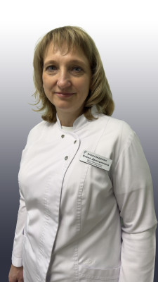
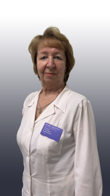
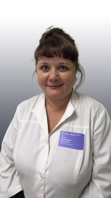

И.о. главного врача
Буханова Мария Сергеевна

Врач-офтальмолог
Александрова Елена Дмитриевна
Медицинская сестра
Амелькина Ангелина Олеговна

Врач по лечебной физкультуре
Арцишевская Наталья Семеновна

Заведующая ОЦОРЗП, врач акушер-гинеколог
Асновская Ольга Леонидовна

Кинезиоспециалист
Барабанова Наталья Александровна

Лаборант
Барсукова Лариса Васильевна

Медицинская сестра процедурной
Борисова Елена Михайловна
Сотрудники по запросу не найдены.
Информация размещена с учётом требований Федерального закона от 27.07.2006 №152-ФЗ «О персональных данных», в рамках Политики в отношении обработки персональных данных и на основании заявления работника.